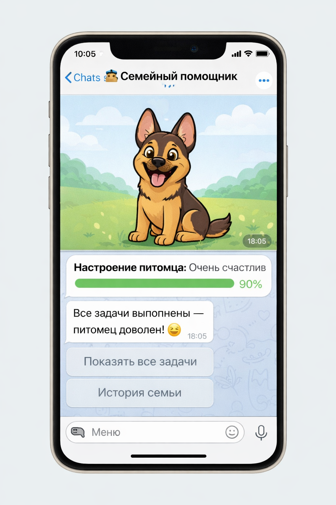
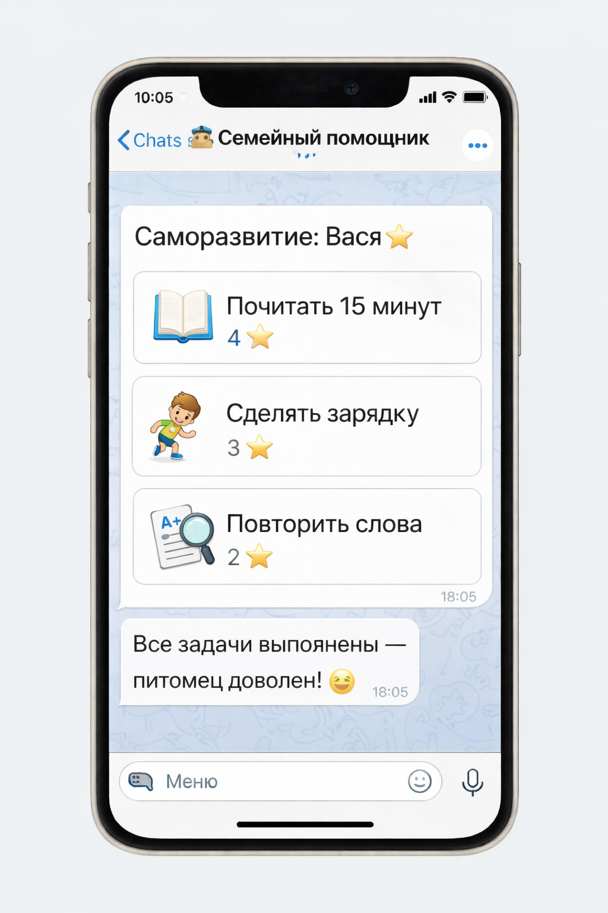
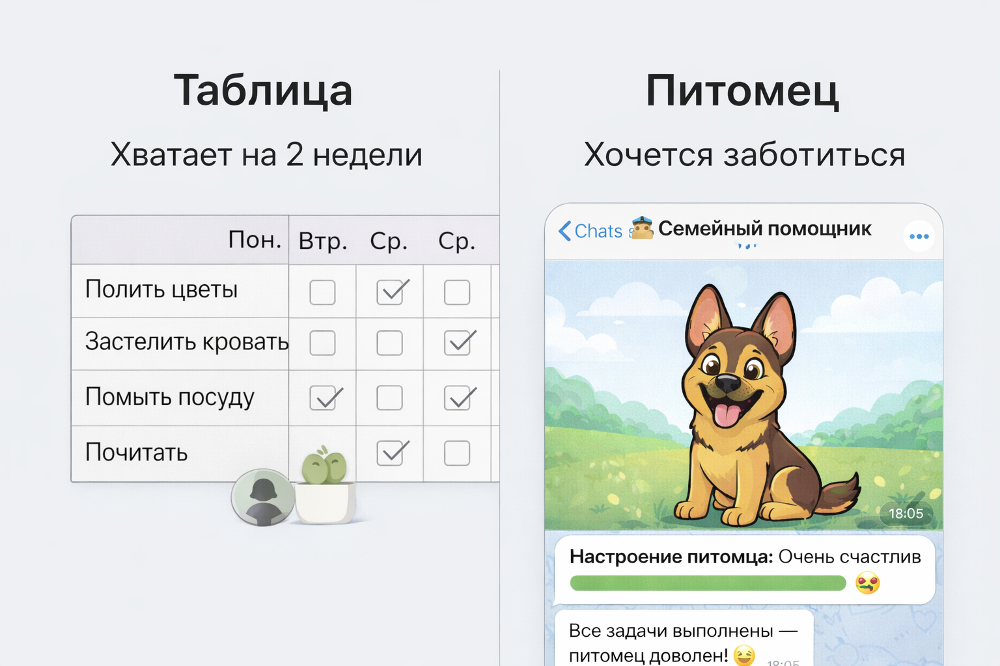
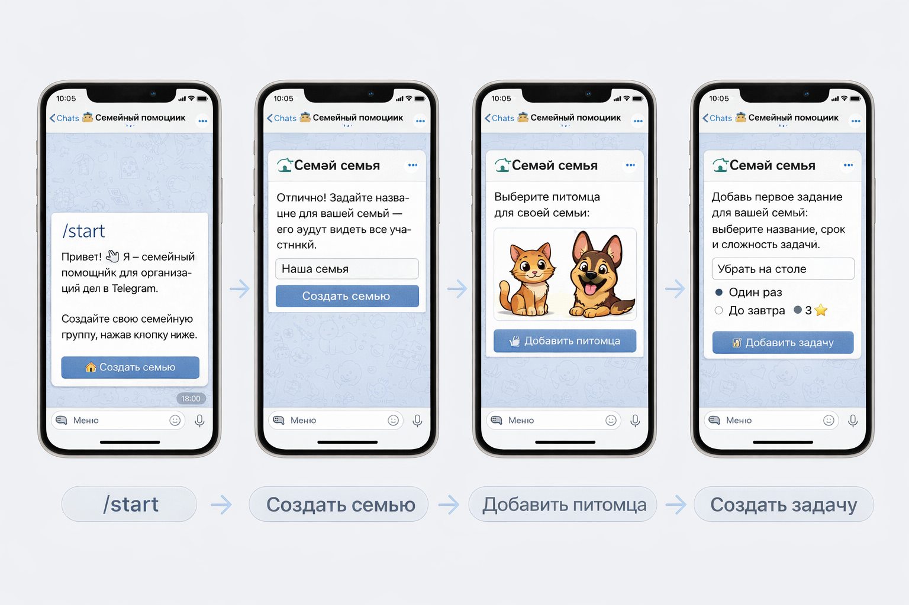

Если вы устали напоминать, спорить и чувствовать себя надзирателем — вы не одни.
Многие родители ищут:
И почти все приходят к одному: уговоры, наказания и таблицы работают плохо и недолго.
👉 Ниже — другой подход.
Попробовать бесплатноЧаще всего проблема не в ребёнке.
Чем больше давления — тем меньше желания.
Опыт родителей и педагогов показывает: дети включаются, когда есть
Именно на этом построен наш продукт.
Мы сделали Telegram-бот для семьи, который превращает дела в игру с живым смыслом.
Он:
Важно:
Без криков.
Без подкупа.
Без наказаний.

Родители часто ищут не только:
но и:
Они работают так же, как бытовые дела:
Саморазвитие перестаёт быть «надо» и становится частью игры и заботы.


Это не контроль. Это мягкая ответственность.
родитель перестаёт напоминать
ребёнок сам заходит посмотреть задачи
«Я сделаю, чтобы питомец был счастлив»
меньше споров
меньше напряжения
больше самостоятельности
Этот бот подойдёт, если:
у вас дети 6–14 лет
вы устали напоминать и контролировать
не хотите воспитывать через наказания
хотите меньше конфликтов и больше участия
Запустите Telegram-бота
Создайте семью
Добавьте питомца
Добавьте первые задачи
Никаких установок.
Никаких сложных настроек.

Нет. Задачи не назначаются приказом. Ребёнок сам выбирает, что делать.
Можно. Все участники видят общий результат семьи.
Да. Лидерборд можно отключить.
Да, MVP доступен бесплатно.
Нет. Всё работает внутри Telegram.
Бот подходит для детей от 6 до 14 лет. Младшим помогают родители, старшие используют самостоятельно.
Да. Подростки 12-14 лет часто более мотивированы, так как сами управляют процессом без родительского контроля.
Таблица — это контроль. Наш бот — это игра с живым персонажем, который вызывает эмоции и заботу. Ребёнок делает не "потому что надо", а "чтобы питомец был счастлив".
Бот снимает напряжение между родителем и ребёнком. Напоминания приходят от нейтрального источника, а не от мамы. Это убирает сопротивление.
Это не волшебная кнопка.
Это семейный эксперимент, который часто уже через несколько дней снижает напряжение.
👉 Запустить семейного помощника в Telegram